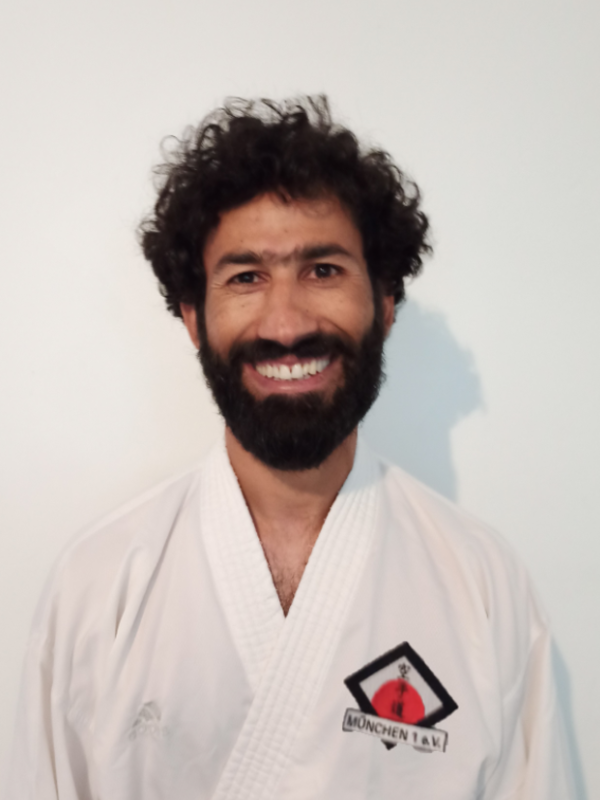
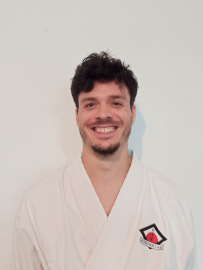

Kruno Hrgovcic / 5. Dan
Kruno ist unser Cheftrainer. Seit bereits über 30 Jahren sorgt er zusammen mit den anderen Vorstandsmitgliedern und Trainer:innen für ein gutes, sportliches Trainieren und reibungsloses Funktionieren unseres Vereines.Kruno kämpfte für das kroatische Nationalteam und wurde unter anderem mehrfacher Kroatischer und später mehrfach Bayerischer Meister.
Er besitzt die Prüfer- sowie Übungsleiter Lizenz und hat in unserem Verein bereits über 2000 Trainings ehrenamtlich gehalten.
"Karate hat mein Leben positiv beeinflusst. Ich lernte dabei viel über Leistung und Charakter, gewinnen und verlieren. Das dürfen auch meine Schülerinnen und Schüler von mir lernen."

Nooragha Quraishi / 3. Dan
Trainer Noori hat als Kind in Afghanistan mit dem Shotokan Karate angefangen.Er nahm an nationalen und internationalen Meisterschaften teil und gewann mehrere Turniere, auch mit der afghanischen Nationalmanschaft in der Disziplin Kumite.
Noori ist bereit uns auch langfristig als Trainer zu unterstützen, was für unseren Verein von großer Bedeutung ist.
"Karate ist mein Leben."

Sebastian Breden / 3. Dan
2012 zog es Sebastian zum Medizinstudium nach München und so in unseren Verein.Seine ersten Karateschritte machte er kurz nach seiner Einschulung bei Sensei Josef Faller (6. Dan) in Breisach am Rhein, wo er in seiner Jugend an nationalen Wettkämpfen teilnahm.
Nach jahrelangem Training legte er seine Danprüfungen 2010 und 2017 ab.
Als Sportmediziner ergänzt er mit seinem Schwerpunkt Kumite unseren Trainerstab perfekt.

Mike Zwick / 3. Dan
Mike ist in Regensburg geboren und zog nach dem Abschluss seines Betriebswirtschaftsstudiums nach München.Derzeit arbeitet er dort in einer Patentanwaltskanzlei.
Kampfsport begleitet ihn seit seinem 7. Lebensjahr.
Neben Karate machte er auch Erfahrung in Krav Maga, Judo und Hanbo (Kurzstock).
Als ausgebildeter Personenschützer unterrichtet er uns auch in Selbstverteidigung.
Christof Neumair / 2. Dan : Onlinetrainer
Als IT-Senior Consultant unterstützt Christof uns bei der Digitalisierung des Trainings.Unser Online-Trainer bringt den Mitgliedern das Training direkt ins Wohnzimmer.
Als langjähriger Vorstand und ausgebildeter Trainer bringt er nicht nur als Karateka viel Erfahrung mit, sondern sieht auch gerne über den Bildschirmrand hinaus.
Trotz seinen Erfahrungen in Taekwondo, Thaiboxen, Brazilian Jiu-Jitsu und Wing Chung ist er aber immer dem Karate treu geblieben.
Als früherer internationaler Kampfrichter für verschiedene Kampfsportarten unterstützt er unserer Mitglieder zudem bei Prüfungen und Prüfungsvorbereitung.
Erfolg ist die logische Konsequenz von harter Arbeit und schlauen Konzepten.
Sein Motto: Nur die Achtung vor dem Schüler bewirkt die Achtung vor dem Lehrer.

Christina Müller / 1. Dan
Christina macht seit 2002 Karate und unterstützt das Trainerteam in den Bereichen Kihon und Kata.Sie tritt auch bei Wettkämpfen der Masterklasse an und gewinnt Medaillen in Kata und Kumite.

Jakob Bahret / 1. Dan
Jakob hat in Dar es Salaam mit Karate angefangen.Wenn er nicht gerade von der Bayrischen oder Deutschen Meisterschaft Pokale für uns heimbringt, ist er am Laufen, Klettern, Bouldern, Surfen, Tischtennis spielen, Radfahren, Skitouren gehen oder Schwimmen.
Nebenbei baut er als Architekt schöne Häuser.